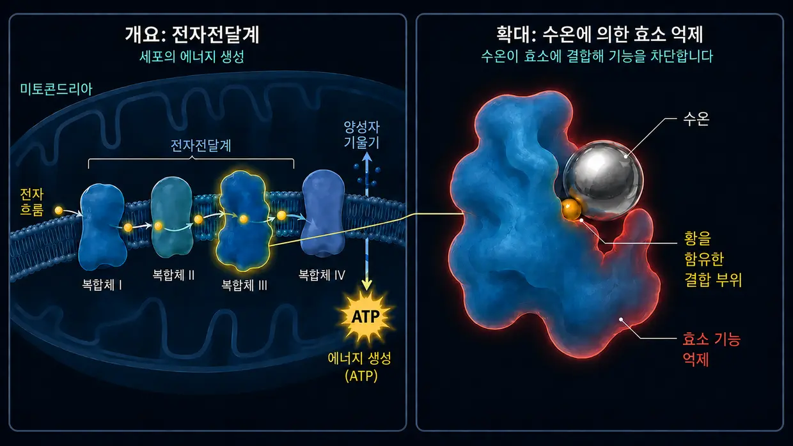

약물·독성 물질로 인한 이명(이독성)
마지막 업데이트: 2026년 6월
저 역시 당시 극심하고 지옥 같은 이명에 시달렸습니다. 제 경우 당시 이명의 주된 원인은 전형적인 소음 노출이었고(갑작스러운 약물 관련 사건은 아니었습니다). 하지만 그 끊임없는 소리가 제 신경과 잠, 삶 전체를 지속적으로 공격했다는 점에서는 여기서 다루는 약물·독성 물질로 인한 이명과 정확히 같았습니다. 의사들은 제게도 그저 이명과 함께 사는 법을 배워야 한다고 자주 말했습니다.
화학적 유발 요인을 다룬 이 글을 쓰는 이유는 이 주제가 제 조사에서 중요한 역할을 했기 때문입니다. 2012년부터 세포 생화학을 깊이 파고들었고 독성학과 환경의학 분야도 함께 살펴봤습니다. 바로 여기서 모든 것이 다시 연결됩니다. Dr. Klinghardt나 Dr. Mutter 같은 환경의학 전문가들의 실무에서는 흔히 흥미로운 현상이 관찰됩니다. 이명 환자에게 숨어 있던 독성 물질 또는 중금속 부담이 중요한 요인으로 확인되면, 세포 수준을 겨냥한 해독으로 귀에서 들리는 소리가 흔히 뚜렷하게 또는 당사자가 체감할 만큼 완화될 수 있습니다. 여기서 공유하는 내용은 이 조사를 통해 제가 이해한 바이며, 앞으로 이 웹사이트에서 이 조사를 바탕으로 소개할 해결 접근법의 토대이기도 합니다.
몸 안에서 시작되는 화학적 공격
이명을 떠올리면 대개 두 가지 장면이 곧바로 머리에 그려집니다. 굉음을 내는 콘서트장(소음), 또는 극심한 스트레스나 내면의 트라우마에서 비롯된 스트레스(심신성 요인)입니다. 하지만 기계적이지도 감정적이지도 않고 순전히 화학적인 세 번째 유발 요인이 있습니다. 바로 약물이나 독성 물질로 인한 이명입니다. 제 판단으로는 이런 이명이 가장 드문 편에 속하지만, 빠짐없이 다루기 위해 이 세 번째 유발 요인에 대한 제 관점도 설명하고자 합니다. 전문 용어로는 이독성(귀에 해로운 독성)이라고 합니다.
처음에는 추상적으로 들릴 수 있지만, 내이는 특정 화학 물질에 극도로 민감합니다. 일부 약물이나 환경 유해물질은 혈류를 타고 내이로 직접 들어가 민감한 유모세포나 청신경을 자극하거나 심지어 손상시킬 수 있습니다.
메커니즘: 화학 작용이 소리를 만드는 방식
과부하가 걸린 뒤 스테레오실리아(입체섬모) 끝의 이온 통로가 계속 너무 넓게 열린 채 제대로 닫히지 않는 상태를 떠올려 보겠습니다. 이미 소음으로 인한 이명 페이지에서 설명한 내용입니다. 소음 외상에서는 음파의 기계적인 힘이 섬세한 감각모의 기하학적 위치를 바꿉니다.
약물이나 독성 물질로 인한 이명도 마지막에는 매우 비슷한 일이 일어나는 경우가 많지만, 거기까지 가는 길이 다릅니다. 귀의 유모세포 하나하나를 작은 생체 배터리라고 생각하면 됩니다. 각 세포는 에너지(ATP), 미네랄, 전압 사이의 극도로 섬세한 균형을 유지합니다.
환경 유해물질이나 독성을 일으킬 만큼 투여된 약물은 세포의 에너지 공장인 미토콘드리아의 기능을 크게 떨어뜨려 이 섬세한 균형을 흐트러뜨릴 수 있습니다. 제가 생화학을 이해한 바에 따르면 세포 수준에서 다음과 같은 일이 일어납니다.
미토콘드리아는 세포에 에너지를 공급하는 데 반드시 필요하므로, 그 결과 세포의 에너지 수준, 즉 ATP 수준이 떨어집니다. 그러면 계속해서 ATP, 즉 세포 에너지를 써야 하는 세포막의 미세한 펌프들이 화학적 균형을 유지할 만큼 빠르게 따라가지 못합니다. 그 결과 칼슘이 세포 안에 쌓입니다. 생물학에서 칼슘은 자극 전달을 직접 촉발하기 때문에, 과도한 칼슘 이온은 세포가 통제되지 않은 “잘못된 신호”를 끊임없이 발사하도록 몰아붙입니다. 제게 이것은 신비로운 우연이 아니라 논리적으로 이어지는 생화학적 과정입니다. 뇌는 이 끊임없는 전기적 신호 폭주를 소리로 인식합니다.
그때 정확히 어떤 소리, 즉 높은 삐 소리나 쉭쉭거리는 소리, 낮은 웅웅거림을 듣는지는 대개 달팽이관(와우)에서 영향을 받은 유모세포가 정확히 어느 위치에 있는지에 달려 있습니다. 이 순간 귀가 물리적으로 파괴되는 경우는 대개 아니지만, 그 섬세한 내부 질서의 박자가 어긋납니다.
전기적 ‘합선’(청신경)
위험에 놓이는 것은 유모세포만이 아니라 “전선” 자체인 청신경도 마찬가지입니다. 이 신경은 미엘린층(수초)이라는 보호막에 둘러싸여 있습니다. 이 절연층에는 지방과 미네랄이 매우 풍부하기 때문에 혈액 속을 떠도는 독성 물질에 특히 민감하게 반응합니다. 화학적 스트레스로 이 막이 약해지거나 “얇아지면” 신경은 신호를 더 이상 깔끔하게 전달하지 못합니다. 말 그대로 전기적 “합선”이 일어납니다.
여기서 인체 해부학의 단순한 원리가 드러납니다. 청신경은 한 가닥짜리 단순한 전선이 아니라 수천 개의 미세한 신경섬유가 모인 굵은 다발입니다. 각각의 신경섬유는 저마다 하나의 특정한 음높이를 전달합니다. 독성 물질로 인한 합선, 즉 미엘린 손상이 높은 주파수를 담당하는 신경섬유에서 일어나면 그에 따라 뇌는 높은 삐 소리를 감지합니다. 낮은 소리를 담당하는 섬유가 영향을 받으면 낮은 웅웅거림을 듣게 됩니다. 어떤 잡음이나 쉭쉭거림, 삐 소리를 느끼는지는 결코 우연이 아닙니다. 주 전선의 어느 미세한 지점에서 절연층이 손상됐는지에 크게 좌우됩니다.
이명의 보편적 법칙
이 모든 퍼즐 조각을 맞춰 보면 하나의 핵심적인 공통점이 선명해집니다. 제 확고한 신념과 경험에 따르면, 이명은 결국 만성적으로 자극받고 과흥분된 청각 처리 신경의 결과입니다. 과흥분이 정확히 어디에서 시작되는지는 물리적으로 보면 거의 중요하지 않습니다.
- 유모세포가 소음이나 약물 때문에 비상 모드에 갇혀 청신경에 글루타메이트를 끊임없이 쏟아붓는 경우든…
- 환경 유해물질과 중금속이 신경의 절연층인 미엘린을 공격해 그곳에서 직접 합선을 일으키는 경우든…
- 또는 극심한 만성 심신성 스트레스가 뇌에 쌓여 청각 처리 중추에 말 그대로 “위에서부터” 지속적인 전류가 흐르게 하는 경우든…
이 보편적인 논리를 이해하고 나면 이명을 둘러싼 정체 모를 공포가 흔히 완전히 사라집니다.
제 경험상 최종 결과는 거의 언제나 정확히 같습니다. 그 부위의 신경계가 만성적으로 자극받고, 전기적인 SOS 신호를 끊임없이 발사합니다. 이 보편적인 논리를 이해하고 나면 이명을 둘러싼 정체 모를 공포가 흔히 완전히 사라지고, 해결로 가는 길도 갑자기 더없이 선명해집니다.
대표적인 유발 요인(이독성 물질)
좋습니다, 다시 본론으로 돌아가겠습니다. 잠재적으로 이독성을 일으킬 수 있다고 알려진 물질은 아주 많습니다. (중요: 이 목록은 스스로 진단하기 위한 의학적 목록이 아니라, 일반적인 이해를 돕기 위한 것입니다!)
1. 약물
일부 약물은 내이를 과도하게 자극할 수 있습니다. 하지만 이름만 아는 것으로는 충분하지 않습니다. 왜 이 약물들이 시스템을 무너뜨리는지 이해해야 합니다. 손상이 일어나는 원리를 이해해야만 뒤에서 다룰 접근법, 즉 세포 에너지와 해독도 비로소 의미가 생깁니다. 가장 잘 알려진 종류는 다음과 같습니다.
고용량 진통제(특히 아스피린/아세틸살리실산)
먼저 안심할 점이 있습니다. 일반적인 두통약 한 알로 대개 이명이 생기지는 않습니다. 연구에 따르면 여기에는 흔히 명확한 ‘용량 역설’이 있습니다. 보통 독성 수준의 고용량, 흔히 하루 수 그램을 복용할 때 비로소 위험해집니다. 이런 일이 생기면 약물이 내이에서 세 단계의 연쇄 반응을 일으킨다는 점을 약리학적 모델들이 시사합니다.
- 모터가 제대로 돌지 않습니다. 이 약물의 활성 성분이 외유모세포에서 모터처럼 작동하는 작은 프레스틴(prestin) 단백질을 차단하는 것으로 여겨집니다. 그러면 달팽이관의 소리 증폭 기능이 무너집니다. 뇌는 무언가라도 들으려고 당황한 나머지 뇌의 중추 ‘볼륨 조절기’인 중추성 이득(Central Gain)을 흔히 최대로 올립니다.
- 신경이 과민해집니다. 동시에 이 약물이 청신경의 수용체를 더욱 쉽게 흥분하는 상태로 만든다는 점을 모델들이 시사합니다. 흥분 역치가 낮아져 신경계가 아주 작은 신호에도 훨씬 민감하게 반응합니다.
- 세포의 ‘정전’이 일어납니다(신호 폭주의 방아쇠). 생화학 연구에 따르면 고용량의 아스피린은 미토콘드리아에서 “탈결합제”로 작용합니다. 비유하자면 세포의 전원 플러그를 뽑아 ATP를 고갈시킵니다. 바로 여기에 소음 외상과의 흥미롭고 논리적인 차이가 있습니다. 소음에서는 기계적인 힘에 의해 세포의 섬세한 감각모가 실제로 휘어집니다. 그러면 칼슘 통로는 제대로 닫히지 않는 문처럼 계속 열려 있고 칼슘이 걷잡을 수 없이 들어옵니다. 아스피린 과다 복용에서는 이런 일이 일어나지 않습니다. 감각모는 온전한 채 제자리에 서 있습니다. 이 경우 균형을 잃은 것은 “오직” 화학 작용뿐입니다. 평소보다 더 많은 칼슘이 들어오는 것이 아니라, 에너지가 급격히 떨어져 미세한 칼슘 펌프가 들어온 칼슘을 다시 내보내는 속도를 따라가지 못합니다. 그 순간 세포는 평소 수준으로 들어오는 칼슘조차 전혀 감당하지 못합니다. 최종 결과는 같습니다. 칼슘이 세포 안에 쌓여 세포가 신경전달물질인 글루타메이트를 끊임없이 방출하도록 몰아붙입니다.
그 결과 생길 수 있는 이명은 이렇습니다. 통제되지 않은 글루타메이트의 홍수가 이미 흥분 역치가 낮아진 신경(2단계)에 닿고, 볼륨 조절기가 끝까지 올라간 뇌(1단계)로 전해집니다. 귀청이 찢어질 듯한 신호 폭주가 끊임없이 이어집니다. 이 단순한 세포 논리는 많은 의사도 명쾌한 답을 내놓지 못하는 일상적인 현상 하나를 설명합니다. 일주일 동안 아스피린을 엄청난 양으로 과다 복용한 삼촌은 복용을 중단한 뒤 흔히 짧은 시간 안에 귀가 다시 조용해지는데, 시끄러운 클럽에 고작 두 번 갔던 26세 조카는 왜 넉 달째 사라지지 않는 이명에 시달릴까요? 제게 답은 너무나 분명합니다. 삼촌에게 일어난 일은 생화학적 정전과 청신경 과민 상태의 결합이었습니다. 의사와 상의해 약물 복용을 중단하고 몸에서 약물이 배출되면 세포의 발전소는 다시 정상적인 생리 상태로 작동할 수 있습니다. 그러면 펌프가 필요한 에너지를 되찾아 과도한 칼슘을 제거하고 시스템도 다시 오류 없이 작동할 수 있습니다. 반면 클럽에 갔던 조카에게는 거친 기계적 폭력이 가해졌습니다. 제 조사와 이해에 따르면 그의 섬세한 감각모는 그 뒤 기하학적 위치가 달라져 있습니다. 더 많이 기울어진 것도 있고, 덜 기울어진 것도 있습니다. 그 결과 이온 통로가 계속 더 넓게 열려 있어 에너지 공급이 그대로여도 생리적으로 정상적인 양보다 더 많은 칼슘이 세포 안으로 들어옵니다. 문 경첩을 억지로 세게 휘어 놓은 것과 같습니다. 소음이 끝났다고 해서 주말 사이에 저절로 고쳐질 리가 없습니다. 자세한 내용은 소음으로 인한 이명 페이지에서 확인할 수 있습니다.
특정 항생제(아미노글리코사이드계)
이 강력한 항생제는 대개 중증 세균 감염을 치료할 때 병원에서만 사용합니다(예: 겐타마이신). 아주 교활한 특성이 있습니다. 흔히 내이액에 선택적으로 축적되고, 그곳에서 고통스러울 만큼 느리게 분해됩니다. 수 주에서 수개월 동안 남아 있을 수도 있습니다. 그곳에서 체내 철과 반응해 활성산소종(ROS, 자유라디칼 등)이 폭발적으로 늘어납니다. 민감한 세포막과 감각모 안쪽의 액틴 골격을 공격하는 생화학적 대화재와 같습니다. 여기에는 두 갈래로 이어지는 단순한 생물학적 논리가 작동합니다.
- 결과 1(세포 사멸): 당시 몸이 이미 약해져 있거나 영양 자원이 거의 없거나 기존 손상이 있다면, 세포는 이 화학적 대화재를 견디지 못하고 완전히 무너져 세포자멸사(apoptosis)에 이릅니다. 역설적인 결과는 이렇습니다. 죽은 세포는 더 이상 신호를 발사하지 않으므로, 이 경우 대개 이명은 생기지 않습니다. 대신 바로 그 주파수대에는 청력 손실(청각 상실)만 생깁니다.
- 결과 2(생존 투쟁 = 이명): 세포가 간신히 공격에서 살아남지만 구조적으로 심하게 손상됩니다. 순전히 화학적으로 일어났을 뿐, 본질적으로는 소음 외상과 정확히 같습니다. 단단한 내부 골격인 액틴이 무너지면서 감각모는 물 없는 꽃처럼 실제로 시들어 버립니다. 하지만 세포는 아직 살아 있습니다! 그래서 구멍 난 세포막을 통해 들어오는 칼슘에 맞서 필사적으로 버팁니다. 이온 유입은 자극 전달을 지시하는 직접적인 화학 신호이므로, 심하게 손상된 세포는 지속적인 공황 모드에 내몰려 청신경 쪽으로 신경전달물질인 글루타메이트를 쉴 새 없이 방출합니다. 이 세포의 생존 투쟁은 지속적인 전기적 발화로 바뀌고, 뇌는 바로 이 신호를 이명으로 인식합니다.
이뇨제(강한 이뇨 작용을 하는 약)
이른바 고리 이뇨제는 몸에서 수분만 빼내는 것이 아니라 칼륨과 나트륨 같은 전해질도 대량으로 배출시킵니다. 무엇이 문제일까요? 내이에는 혈관조(stria vascularis)라는 자체적인 작은 전원이 있습니다. 이 조직층은 내이액에 칼륨을 쉴 새 없이 밀어 넣어 일정한 전압을 유지합니다. 유모세포가 청각 기능에 필요한 전류를 얻는 배터리입니다. 이뇨제는 바로 이 생화학적 펌프 작용을 차단합니다. 그 결과 귀 안의 전압이 급격히 떨어집니다. 생체 배터리가 갑자기 “텅 비고” 청각 시스템은 혼란스러운 경보 상태에 빠져 잡음이나 삐 소리로 표출됩니다.
항암제(예: 시스플라틴)
이 공격적인 항암제는 흔히 중금속인 백금을 기반으로 하며, 세포의 DNA에 개입하도록 설계돼 있습니다. 하지만 이 약물로 이명이 생길 때는 약리학적 모델에 따르면 내이에서 말 그대로 생화학적 대화재가 일어납니다. 이 경우 시스플라틴은 세포에서 가장 중요한 체내 보호 물질인 글루타티온을 완전히 빼앗습니다. 이 보호막이 사라지면 자유라디칼이 세포막에 미세한 구멍을 파고 이온 펌프를 파괴합니다. 그 결과 극심한 이온 불균형이 생깁니다. 칼슘이 세포 안으로 밀려들어 세포가 글루타메이트를 지속적으로 방출하도록 몰아갑니다. 동시에 시스플라틴은 신경독성이 강해 청신경의 절연층인 미엘린층을 말 그대로 분해합니다. 손상된 세포에서 쏟아지는 신호가 보호막 없이 드러난 신경에 닿으면, 뇌로 가는 주 전선 위에서 실제로 측정할 수 있는 합선과 잘못된 발화가 생깁니다. 여기에도 이명의 생물학적 갈림길이 작동합니다. 세포가 완전히 파괴되면(세포자멸사) 대개 이명은 생기지 않고 청력 손실(청각 상실)만 남습니다. 구멍 난 세포막과 드러난 신경을 지닌 채 심하게 손상된 폐허처럼 살아남으면 흔히 방해 신호를 끊임없이 발사합니다. 항암 치료 뒤 생긴 이명이 흔히 극도로 잘 줄지 않고 오래가는 이유를 이렇게 설명할 수 있습니다.
퀴닌(말라리아 치료제 및 근육 경련 완화제)
퀴닌은 혈관을 강하게 수축시킵니다. 내이는 해부학적으로 완전히 막다른 길과 같습니다. 미로동맥(arteria labyrinthi)이라는 단 하나의 아주 작은 동맥만이 내이에 혈액을 공급합니다. 그곳에는 “우회로”가 없습니다. 퀴닌이 이 미세한 동맥을 수축시키는 동시에 적혈구 변형능까지 떨어뜨리면 혈류가 정체됩니다. 그러면 유모세포에 반드시 필요한 산소와 영양소가 차단됩니다. 유모세포는 심각한 산소 부족에 빠져 곧바로 이명의 공황 모드로 전환됩니다.
2. 중금속과 환경 유해물질
수은, 납, 알루미늄, 카드뮴 같은 중금속은 세포 수준에서 극도로 공격적인 파괴 공작원처럼 움직입니다. 깊이 있는 해독 프로토콜을 살펴본 사람이라면 알 것입니다. 중금속은 내이 세포를 그저 무차별적으로 중독시키는 데 그치지 않고 특정 생물학적 과정에 직접 끼어들어 작동을 막습니다. 달팽이관과 청신경에서 네 가지 극도로 파괴적인 메커니즘을 통해 이런 일이 일어납니다.
- 01트로이 목마
- 02티올기 교란
- 03철거용 쇠공
- 04미엘린 분쇄기
메커니즘 1: 트로이 목마(미량원소 치환)
카드뮴과 수은 같은 금속은 생명 유지에 꼭 필요한 미량원소, 특히 아연과 셀레늄에 화학적으로 놀랄 만큼 비슷한 경우가 많습니다. 몸은 속아서 아연 대신 중금속을 단백질에 집어넣습니다. 그 결과는 치명적입니다. 아연은 청신경의 수용체에서 일종의 자연적인 ‘제동장치’ 역할을 합니다. 신경이 아주 작은 자극에도 곧바로 과민 반응하지 않게 해 줍니다. 중금속이 아연을 밀어내면 이 제동장치가 완전히 사라집니다. 청각 신호가 제동 없이 신경계로 들이닥치며, 제 경험상 귀청이 찢어질 듯한 이명으로 나타납니다. 동시에 셀레늄이 밀려나면 몸에서 가장 중요한 항산화 물질인 글루타티온의 생성이 크게 방해받습니다. 세포의 보호 체계가 무너질 위험에 놓입니다.
메커니즘 2: 티올기 교란(단백질 구조 변형)

중금속은 황에 대한 화학적 친화력도 매우 강합니다. 우리 몸의 효소와 미세한 세포 펌프 대부분에는 티올기(-SH)라고 하는 황 함유 결합 부위가 있습니다. ATP 의존성 칼슘 펌프도 마찬가지입니다. 중금속이 내이에 도착하면 곧바로 이 티올기에 달라붙습니다. 금속이 효소와 결합하는 순간 단백질의 3차원 구조가 강제로 변하면서 말 그대로 휘어집니다. 그러면 유모세포의 칼슘 펌프가 막혀 기능을 잃습니다.
메커니즘 3: 세포를 직접 부수는 ‘철거용 쇠공’(직접적인 세포 파괴)
금속은 펌프를 교란하는 데 그치지 않고 세포의 하드웨어를 직접 물리적으로 공격합니다. 납과 카드뮴은 세포의 에너지 공장인 미토콘드리아 안으로 들어가 세포 호흡의 전자전달계에 달라붙고 ATP 생성을 크게 억누릅니다. 비유하자면 세포가 안에서부터 질식할 위기에 놓입니다. 동시에 금속은 귀에서 자유라디칼의 폭발을 일으켜 유모세포의 지방성 보호막인 세포막을 말 그대로 산화시킵니다. 세포막은 산패하고 녹아내리며 구멍투성이가 됩니다(지질 과산화). 독성을 띠는 칼슘은 무너진 댐을 통과하듯 쏟아져 들어옵니다. 금속은 미세한 감각모 안에 있는 단단한 단백질 골격인 액틴도 공격합니다. 분자 다리가 무너지고 감각모가 시들고 꺾이면서 자극 통로를 계속 열린 상태로 고정해 버립니다.
메커니즘 4: 미엘린 분쇄기(주 신경 케이블 공격)
중금속은 전선 자체인 청신경에도 직접 파고들어 절연층인 미엘린을 파괴합니다. 이 층은 거의 80%가 지방으로 이루어져 있어 산화 스트레스의 완벽한 표적이 됩니다. 자유라디칼은 그 지방을 말 그대로 부식시켜 없앱니다. 예를 들어 수은은 절연층을 붙여 주는 분자 접착제인 미엘린 염기성 단백질(Myelin Basic Protein, MBP)에 결합해 층이 벗겨지게 합니다. 독성학에서는 납이 한 걸음 더 나아가 슈반세포를 선택적으로 손상시킬 가능성이 강하게 제기되고 있습니다. 슈반세포는 원래 미엘린을 복구해야 할 작은 ‘작업자’들입니다. 절연층이 없으면 청각의 전기 신호는 크게 느려지고, 보호막 없이 드러난 인접 신경섬유로 건너가 교차 간섭(cross-talk)을 일으키며 대규모의 비정상 발화를 만들어 냅니다.
-
01화학 물질 유입
독성 수준의 고용량 약물 또는 중금속·환경 유해물질이 혈류를 타고 내이에 도달합니다.
-
02균형 붕괴
ATP가 떨어지고 펌프가 따라가지 못해 칼슘이 세포 안에 쌓이며 미엘린층이 얇아집니다.
-
03지속적인 잘못된 신호
약해진 세포가 글루타메이트를 끊임없이 방출하거나 신호가 인접한 신경섬유로 건너가고, 뇌는 이를 소리로 인식합니다.
그런데 왜 모든 사람에게 이명이 생기지는 않을까요? (중금속의 ‘복불복’과 여러 악조건이 겹친 ‘퍼펙트 스톰’)
여기서 자연스럽게 한 가지 의문이 생깁니다. 수은(생선이나 아말감에서), 납(오래된 배관에서) 같은 물질이 이토록 파괴적으로 날뛴다면, 참치 피자 한 판을 먹은 뒤 왜 인류의 절반에게 곧바로 이명이 생기지 않을까요? 그 답은 몸이 지닌 자체 보호막, 말 그대로 생물학적 ‘복불복’, 그리고 이명이 단 하나의 고립된 요인만으로 생기는 경우는 거의 없다는 사실에 있습니다.
1. 독성학적 ‘복불복’(국소적 취약 부위):
중금속에는 귀를 찾아가는 GPS가 내장돼 있지 않습니다. 혈액 속을 무작정 떠돌며 저항이 가장 약한 부위(locus minoris resistentiae)를 찾습니다. 어디에 쌓일지는 흔히 순전히 우연이며, 그 순간 몸의 어디에 약점이 있는지에 달려 있습니다. 예를 들어 밤에 이를 심하게 갈거나 목과 턱 부위에 뚜렷한 증상이 없는 염증이 있으면 귀 주변 혈관의 투과성이 크게 높아집니다. 원래 귀를 보호해야 하는 이른바 혈액-미로 장벽이 활짝 열려 있는 셈입니다. 수은은 이 열린 문을 찾아 바로 청신경에 쌓이는 반면, 다른 사람의 몸에서는 그냥 계속 이동할 수도 있습니다.
2. 몸속 임시 저장고, 글루타티온 보호막, 그리고 태어날 때부터의 축적량:
건강한 몸은 간에서 글루타티온을 대량으로 만듭니다. 글루타티온은 중금속이 귀에 도달하기 전에 수갑을 채우듯 붙잡아 몸 밖으로 배출하는 분자입니다. 하지만 여기에는 유입량이라는 냉혹한 현실이 있습니다. 어떤 사람은 흔히 자신도 모르는 사이에 다른 사람보다 훨씬 많은 중금속에 노출됩니다. 오염된 공기, 입안의 오래된 치과용 아말감 충전재, 직장, 흡연, 중금속 함유 식품, 오염된 일상용품과의 지속적인 접촉 등이 원인일 수 있습니다. 결국 독성 부담은 몸에 들어오는 절대량과 몸이 독성 물질을 결합해 배출하는 능력이 함께 결정하는 복합적인 결과입니다. 몸이 이를 처리하지 못하면 독성 물질을 혈액에서 빼내기 위해 뼈나 일반 지방조직처럼 비교적 안전하다고 여겨지는 ‘저장고’에 쌓아 두는 경우가 많습니다. 바로 여기에 청각을 위협하는 치명적인 생물학적 함정이 숨어 있습니다. 신경계, 특히 청신경을 감싸는 미엘린층은 거의 80%가 지방으로 이루어져 있습니다. 몸이 지용성 중금속을 지방조직에 필사적으로 ‘일시 저장’하려 할 때, 불운하게도 바로 이 극도로 민감한 신경조직이나 유모세포 주변 구조가 ‘복불복’의 표적이 되는 경우가 많습니다.
여기에 냉혹하고 흔히 감춰지는 생물학적 사실이 하나 더 있습니다. 많은 사람은 태어나는 날부터 이미 저장고가 차 있는 상태로 이 독성학적 복불복을 시작합니다. 왜 그럴까요? 연구들은 임신 중 어머니가 수년에 걸쳐 몸에 쌓아 온 중금속 중 일부를 태반을 통해 태아에게 전달한다는 점을 시사하기 때문입니다. 어떤 사람은 태어날 때부터 세포라는 통이 이미 훨씬 더 차 있습니다.
마지막으로 이 보호 체계가 무너지면 위험해집니다. 극심한 스트레스, 유전적 요인, 영양소 부족 때문에 해독 체계가 갑자기 한계에 이릅니다. 몸속 저장고가 열리거나 새로 들어온 독성 물질을 애초에 붙잡지 못해 혈액 속을 돌게 되고, 앞서 말한 복불복처럼 피할 수 없이 몸의 약점을 찾아갑니다.
3. 위험한 복합 상황(퍼펙트 스톰):
하지만 실제 생물학적 현실에서는 흔히 극도로 복잡한 복합 양상이 나타납니다. 이 사실은 소음 노출 뒤 이명이 생긴 사람이라면 누구나 중금속에 완전히 중독된 상태일 것이라는 오해도 바로잡아 줍니다. 전혀 그렇지 않습니다.
오히려 다음과 같은 일이 자주 생깁니다. 어떤 사람은 환경 유해물질이나 중금속 때문에 유모세포나 그 안의 미토콘드리아, 또는 청신경 자체에 이미 어느 정도의 기저 독성 부담이 쌓여 있습니다. 미엘린층은 이미 조금 얇아졌을 수 있습니다. 칼슘 펌프는 이미 한계를 향해 가고 있거나 세포는 한계에서 아슬아슬하게 버티며 일하고 있습니다. 이것만으로는 흔히 지속적인 이명이 전혀 생기지 않습니다. 몸이 이를 완충하며 외줄 위에서 간신히 균형을 잡고 있기 때문입니다.
그러다 삶의 여러 요인이 한꺼번에 겹칩니다. 극심한 만성 스트레스에 빠집니다. 스트레스 호르몬인 아드레날린과 코르티솔이 혈관을 수축시키고 귀의 혈류를 크게 줄이며 회복에 필요한 잠까지 빼앗습니다. 시스템은 밤에도 더 이상 회복하지 못합니다. 이렇게 극도로 취약한 상태에서 소음에까지 노출되면, 갑작스러운 큰 소음이든 만성적인 소음 노출이든 상관없이 이 연쇄 과정 어딘가에서 시스템이 마침내 무너집니다. 이미 손상된 하드웨어는 그 기계적인 힘을 더 이상 견뎌 내지 못합니다. 이온 균형이 붕괴하고, 액틴 골격이 무너지거나, 미엘린층이 완전히 기능을 잃으면서 지속적인 전기 신호가 생길 수 있습니다.
제 관점에서 이것은 치명적인 조합입니다. 독성 물질은 하드웨어를 서서히 약화시키고, 스트레스는 산소 공급을 끊으며, 소음은 이미 가득 찬 세포라는 통을 넘치게 만드는 마지막 한 방울이 되는 경우가 많습니다.
반대로, 제 판단으로는 순전히 독성을 띠는 약물이나 심각한 중금속 중독만으로 생기는 이명도 있습니다. 공격적인 항암화학요법이나 급성 중독처럼 화학 물질의 용량이 충분히 높다면 “퍼펙트 스톰”도 추가적인 소음 노출도 전혀 필요하지 않습니다. 이런 경우에는 독성 물질만으로도 세포의 발전소를 멈추거나 신경을 손상시키기에 충분합니다.
독성 물질로 인한 이명(중금속·농약)이 흔히 잘 줄지 않고 오래가는 이유
소음을 피하면 유발 요인은 즉시 멈춥니다. 하지만 독성 물질로 인한 이명은 흔히 훨씬 더 복잡합니다. 여기서는 구체적으로 실제 환경 유해물질이나 농약 또는 중금속 노출로 인한 이명을 말합니다. 이런 물질이 실제로 이명 과정의 주된 메커니즘이거나 큰 비중을 차지하는 요인으로 드러날 때, 이명은 특히 좀처럼 줄지 않고 오래 지속됩니다. 물질이 신경조직과 세포 깊숙이 쌓이기 때문입니다. 일반적인 진통제처럼 몇 시간 뒤 혈액에서 사라지지 않습니다. 단단히 달라붙어 있어 몸은 이 끈질긴 독성 물질을 아주 힘들게, 극도로 천천히, 오랜 시간에 걸쳐 배출하는 경우가 많습니다.
어떻게 해야 할까요?
그렇다면 이제 무엇을 할 수 있을까요? 여기서 설명한 메커니즘을 뒷받침하는 과학적·실무적 근거는 제 출처 페이지에서 확인할 수 있습니다. 더 깊이 살펴보고 제 관점과 경험에 비추어 약물이나 독성 물질로 인한 이명에 구체적으로 무엇이 도움이 되는지 알고 싶다면 아래 링크를 누르면 됩니다.
중요한 안내
처방약은 절대로 임의로 중단하지 마세요. 약물 복용과 관련해 이명이 나타났다면, 특히 갑자기 시작된 경우에는 가능한 한 빨리 의사와 상담해 이후 대응을 정하세요. 약물 복용을 변경하는 모든 과정은 반드시 의사의 지도 아래 이루어져야 합니다.
이 웹사이트에서 공유하는 내용, 설명 모델, 전략은 의학적 조언이 아니라 제 개인적 경험담과 자체 조사에 바탕을 둔 정보입니다. 사람의 몸은 저마다 다릅니다. 저는 의사가 아니며 치료 효과를 보장하지 않습니다. 건강 문제가 있다면 자격을 갖춘 의사와 상담하세요. 여기에서 설명한 접근법은 본인이 책임지고 실행해야 합니다.